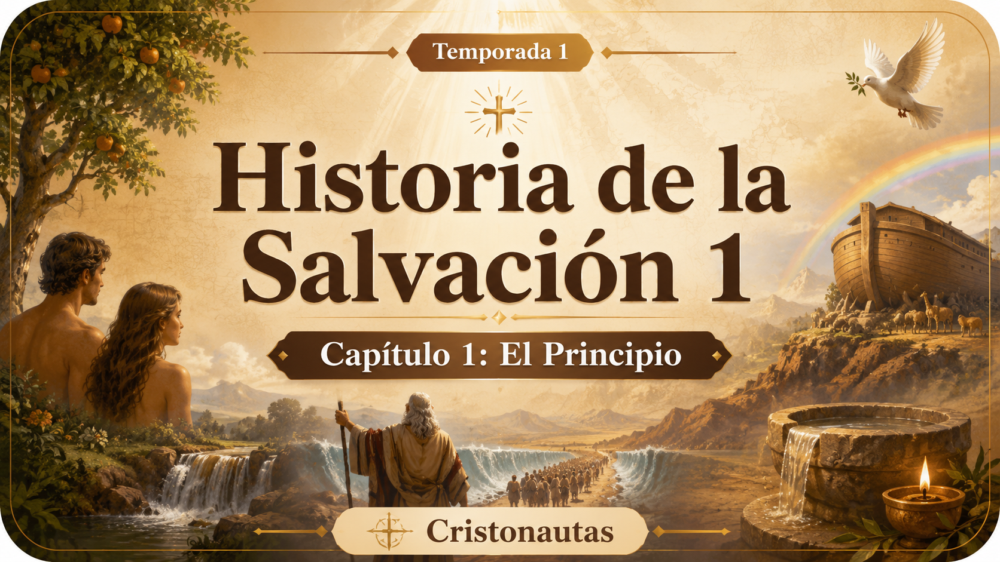

ÚLTIMO AGREGADO
📺 Canal EWTN
Videos de canales recomendados. Todo en un solo lugar.
Una serie para aprender, reflexionar y crecer en la fe de forma sencilla. Elige una temporada y comienza desde el primer capítulo.
Inicia la primera temporada desde el capítulo 1 y continúa con la lista completa.

Por derechos de autor, esta temporada no puede reproducirse dentro de la página. Puedes abrirla directamente en YouTube.
▶ Abrir temporada en YouTubeHaz clic para reproducir. Ver lista completa en YouTube.
Haz clic para reproducir. Ver lista completa en YouTube.
Una serie para conocer, comprender y profundizar en la riqueza del Concilio Vaticano II desde una mirada clara, formativa y cercana.
Comienza esta serie de formación católica desde el primer episodio y continúa con la lista completa en YouTube.